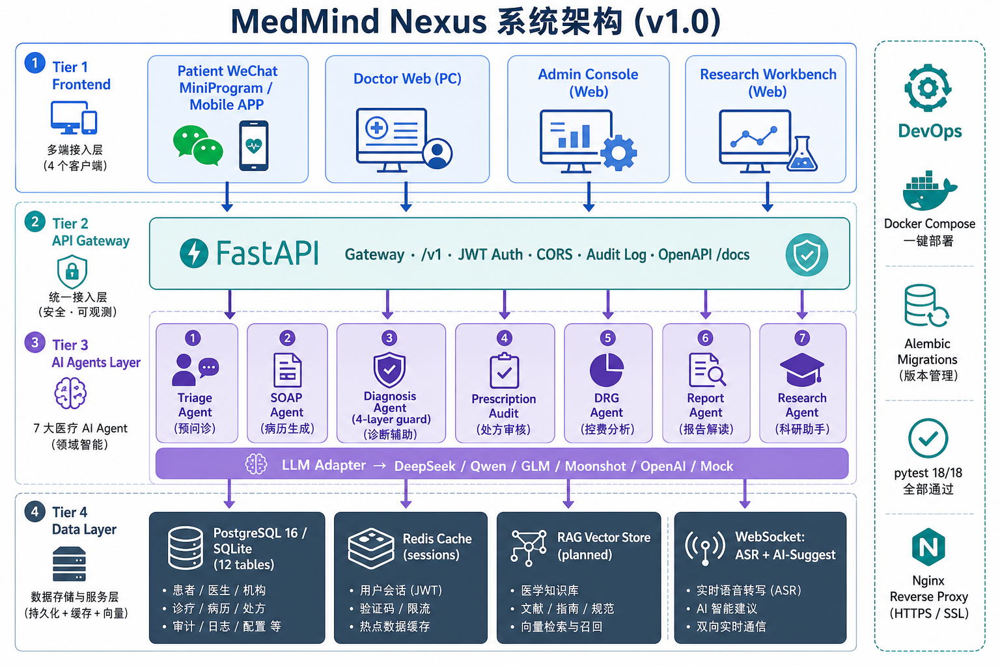

🗺️ 总览
🏠 官网
🔑 登录
🎬 演示导览
📱 患者端
💻 医生端
📊 管理端
🔬 科研端
🗺️ MedMind Nexus · 全产品总览
面向中小医疗机构的 AI 原生智能体平台 · 四端联动 · 18 个页面 · 一图掌握全部交付
18
个页面
4
端联动
7
个 AI Agent
40+
个 API 路由
18/18
测试通过
0
断链 ·
0
占位符
🏗️
系统架构一图看懂
v1.0 · 全栈四层

点击查看大图 · 涵盖 4 层架构 / 7 大 AI Agent / 12 张表 / 部署矩阵
🌐
产品官网 & 演示导览
2 个页面
🏠
官网
官网首页
入口
Hero 区动态卡片 + 3 大差异化 + 12 技术栈 + 3 档定价 + 联系表单
推荐第 1 站
21 KB
🎬
导览
演示导览
为您准备的 5 步演示路径，让客户在 8-10 分钟内看完所有核心功能
向客户演示
📱
患者端（微信小程序 / 手机 APP）
1 个 SPA · 含 5 个子页面
📱
SPA · 5 页
手机模拟器
可交互
首页 ·
AI 预问诊
（可对话） · 智能分诊 · 报告解读 · 用药提醒 · 健康档案
含真实对话
SOAP 摘要
💻
医生端（PC 桌面 / Web）
6 个页面
🏠
工作台
医生工作台
今日 12 位预约 + AI 病历生成统计 + AI 推荐 + 本月 AI 价值
主任医师
⭐ 核心
🎙️
诊间助手
AI 诊间助手
核心
实时语音转写动画 + SOAP 病历生成 + AI 诊断/用药建议 + 指南依据
语音动画
SOAP
📋
病历
病历管理
病历列表 + 详情 + 质控评分 + 时间线 + AI 标记
SOAP 格式
🧠
诊断辅助
AI 诊断辅助
鉴别诊断 + 循证依据 +
幻觉防护
4 层校验 + 指南匹配
幻觉防护
RAG
💊
处方
AI 辅助开方
处方明细 + 药物相互作用审核 + 过敏排查 + 医保费用预估
96/100 评分
✅
质控
AI 病历质控
病历质控评分卡 + 错误标记 + 月度趋势 + 整改建议
96.2 分
📊
管理端（运营驾驶舱 · 深色专业主题）
4 个页面
📊
驾驶舱
运营驾驶舱
5 KPI + 30 天趋势 + DRG 盈亏 + 实时预警 + 医生效率 + 病种分布
4 张图表
⭐ 核心
💰
DRG 控费
DRG/DIP 控费
核心
6 例样本超支预警 + AI 优化建议 + ROI 趋势 + 病种盈亏排行
院长最关心
✅
医疗质控
医疗质控看板
质控雷达图 + 6 个月趋势 + 科室质控排行 + 不良事件统计
雷达 + 趋势
🤖
AI 价值
AI 使用价值分析
8 项 AI 能力指标 + 投入产出 ROI + 节省工时统计 + 满意度
ROI 1:8.4
🔬
科研端（Web）
4 个页面
🔍
文献
AI 文献检索
PubMed / 知网 / 万方多源检索 + 5 篇真实样例 + AI 摘要 + 影响因子
多源
AI 摘要
📊
统计
AI 统计分析
R 代码生成 + Kaplan-Meier 曲线 + Cox 回归 + 自动选择检验方法
R 代码
KM 曲线
⭐ 核心
📝
标书
国自然标书生成
核心
完整 5 大章节生成 + AI 综合评分 92 + 中标率预测 + 自动配图
¥ 58 万项目
📚
论文
论文写作辅助
中英对照逐句润色 + AI 选刊推荐（IF + 录用率） + 学术润色建议
中英对照
📦
原生客户端工程
2 套 (本轮新增)
📱
微信小程序
患者端微信小程序
原生
6 页面 (首页/AI问诊/分诊/报告解读/用药/档案) + 后端对接 + 离线 demo 回退
可导入微信开发工具
24 个文件
🖥️
桌面端
医生端 PC 桌面端 (Tauri)
跨平台
复用 Web 医生端 + Tauri 2 打包 + Win/Mac/Linux 三平台 + 体积 < 10MB
npm run tauri build
📂
项目文档 & 原始资源
7 份
📖
README
前端 README.md
前端项目说明、目录结构、使用方法
4.8 KB
🏗️
架构
系统架构说明
本轮新增
4 层架构 + 7 Agent + 12 表 + 部署矩阵 + 数据流
附架构图
🔌
API
API 速查表
40+ 路由
40+ REST + 2 WebSocket + 调用示例 + RBAC 矩阵
5.4 KB
🩺
手册
医生端使用手册
本轮新增
医生 5 分钟上手 + AI 诊间助手 + SOAP 审核 + 快捷键
临床友好
⚙️
运维
运维部署手册
本轮新增
Docker + Nginx + PG + Redis + 备份 + 监控 + 火警 + 应急预案
4.3 KB
📋
任务清单
任务清单.md
需求对称性核对表 + 完成度 + 文件清单
100%
📁
PRD 原文
PRD 原始文档（11 份）
主文档 + M1-M6 详细设计 + 用户故事 + API + AI 能力说明
217 KB · 原样保留
MedMind Nexus 医智中枢 · v1.0 最终交付版 · 2026-06-12
所有页面均可双击 HTML 在浏览器中直接打开，无需后端